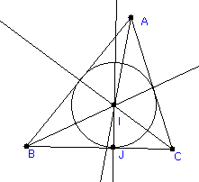

Part I: The Circumcenter of a triangle
1. Start up Geometry Explorer. Using the segment tool construct a triangle ABC in the Canvas. Then, select all three sides and click on the midpoint tool to construct the midpoints to each of the sides.
Part II: The Orthocenter of a triangle.2. Next, select, in turn, each side and its midpoint and click on the perpendicular tool to construct the three perpendicular bisectors of each side.
4. Note that it appears that the three perpendicular bisectors intersect at a common point. Drag vertices A, B, and C around. Does this common intersection property persist? This common point is called the circumcenter of the triangle. Select two of the perpendicular bisectors and click on the intersection tool to find the circumcenter G. Then, construct a circle with center at the circumcenter and radius out to to one of the vertices of the triangle. What do you notice about the circle in relation to the vertices of the triangle. This circle is called the circumscribed circle about the triangle.
1. Construct a new triangle ABC in the Canvas. Then, construct the perpendiculars from each side to the opposite vertex. It appears that the three perpendiculars intersect at a common point, point O in the figure. This point is called the orthocenter of the triangle. Construct a circle at the intersection point with radius out to one of the vertices. What do you notice different about this situation in comparison to the example above?
Part III: The Incenter of a triangle.
1. Construct a new triangle ABC in the Canvas. Then, construct the angle bisectors of each angle of the triangle. For example, to construct the bisector on angle CAB we would select (in order) points C, A, and B and click on the bisector tool. Note that angles are oriented in Geometry Explorer and you must select the vertices of an angle in the proper order. It appears that yet again the three bisectors intersect at a common point called the incenter of the triangle.2. There is a special circle associated to the incenter. To construct this circle, drop a perpendicular line from the incenter to one of the sides of the triangle, and find the intersection of this perpendicular with the side. Call this point J. Construct a circle with center at the incenter and radius at J. This circle is the inscribed circle to the triangle.
Drag points A, B, and C around. What special properties does the incenter have?